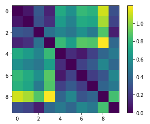

Home
Weeks 2&3 Score
Week 4 Table
Week 4 Lab Data
Week 5 Schema
Week 7 Metadata
Week 8 Table
Week 8 Lab Analysis
Week 9 Lab
Week 10 Lab
Songs used
Ketsa - Slow Vibing
Checkie Brown - Jeanny(CB35)
Yung Kartz - Starz
Task 1 Captures

Task 2 Analysis
Original
Redone
Analysis
Scores do have some aspects in common, however, the original is distorded after the conversion from SonicVisualizer.